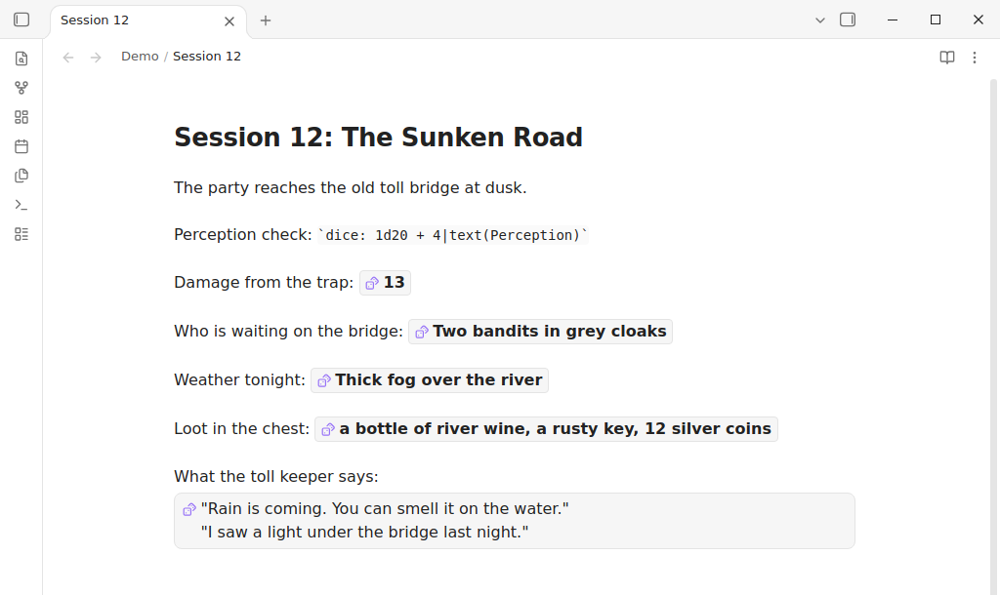
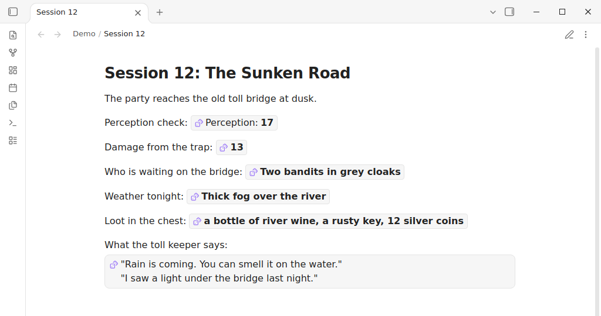
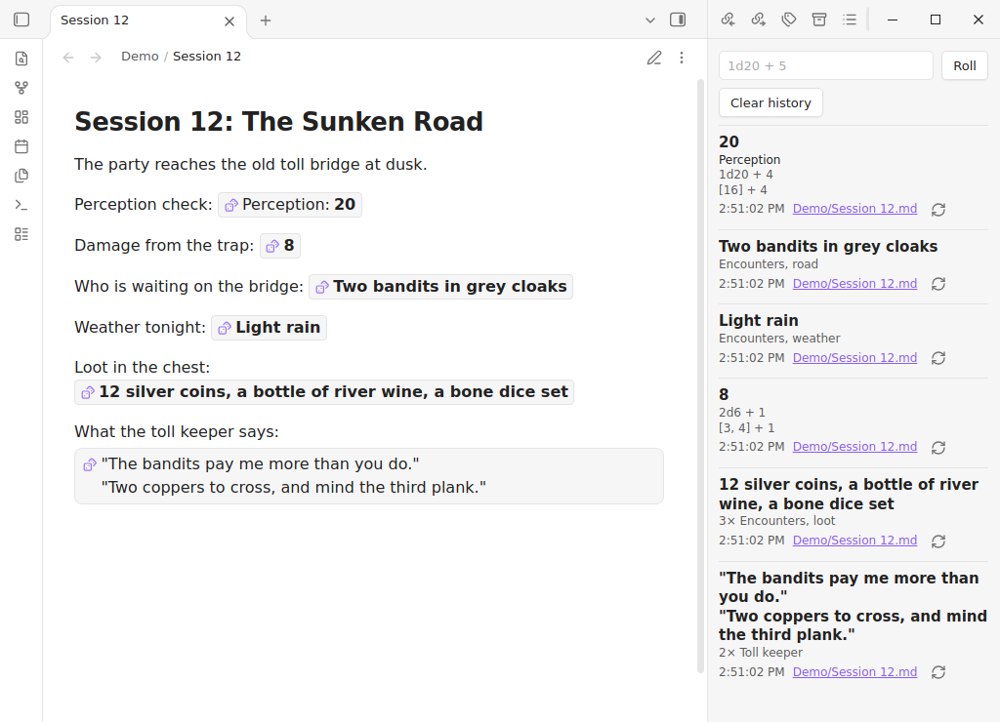

Rollwright · Obsidian plugin
Dice and random tables, right in your notes.
Write a formula, read the result, click to roll again. Roll on your own tables, lists, sections and tags, and keep a history of every roll. Made for game masters and solo players who keep their sessions in Obsidian.
Version 0.2.0 is out on GitHub. The listing in Obsidian's Community plugins is on its way.

What you can do
Rollwright uses the dice: notation known from the Dice Roller plugin,
so most notes you already have should keep working. All rolling is free.
- Roll dice in a sentence.
`dice: 1d20 + 4`becomes a result you can click to roll again. Keep highest, exploding dice, rerolls, success counting, Fudge dice and the narrative dice of Genesys and the Star Wars roleplaying games. - Roll on your own notes. A random row from a table, an item from a list, a block from a note, a line, or a note with a tag.
- Lookup tables. Put a formula in the first header and Rollwright picks the matching row. Cells can hold rolls too.
- Keep or write a result.
dice+:keeps a result after a restart,dice-mod:writes it into the note after you confirm. - Roll history. A side panel shows what you rolled, from which note, and lets you roll again.
- Your numbers in your rolls. Save formulas by name, or use a number from the note's frontmatter: with
str: 3,`dice: 1d20 + str`adds 3. - Works where you write. Reading view and Live Preview look the same, in light and dark themes.


Install
Once Rollwright is listed: open Settings, Community plugins, Browse, search for Rollwright, install and turn it on. Until then you can install it by hand.
- Download
main.js,manifest.jsonandstyles.cssfrom the latest release. - Put them in a folder
.obsidian/plugins/rollwright/inside your vault. - Restart Obsidian, open Settings, Community plugins, and turn on Rollwright.
- In any note, type
`dice: 2d6 + 3`with the backticks, then move the cursor away.
- Price
- Free. Two skins $6, once
- Works on
- Obsidian desktop. Mobile not yet tested
- Account
- None needed
- License
- MIT, open source
Paid skins
Every rolling feature is free. Two extra looks, Parchment and Arcane, are a one-time purchase of $6 through Polar. Press Buy in the settings, pay, then paste the license key and press Activate. One key works on all your devices. The Classic skin is free.
Privacy
Rollwright has no telemetry and needs no account. It reads your notes to roll on them.
Your notes are only changed when you confirm a dice-mod: code, and then only
that code in that note. Outside the vault it touches nothing.
Its only network connection is the license check for the paid skins, and only once you
use a license key. It then contacts api.polar.sh when you press Activate, and
after that at most once every 30 days. It sends your key, our organization id and our
benefit id, nothing else. Polar sees your IP address. The plugin keeps only the key and
the date of the last check. Read Polar's privacy policy.
Nothing is sent to Dortus.
Support
A question, an idea or a bug? Open an issue on GitHub or write to thijs@dortus.com.